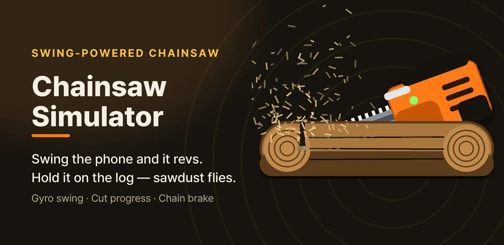
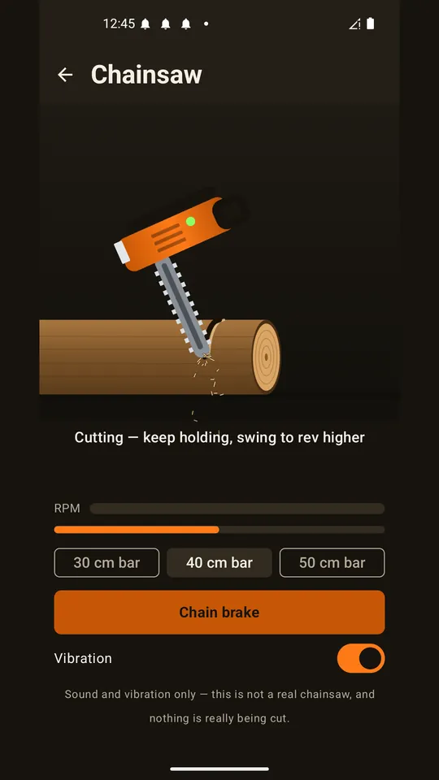
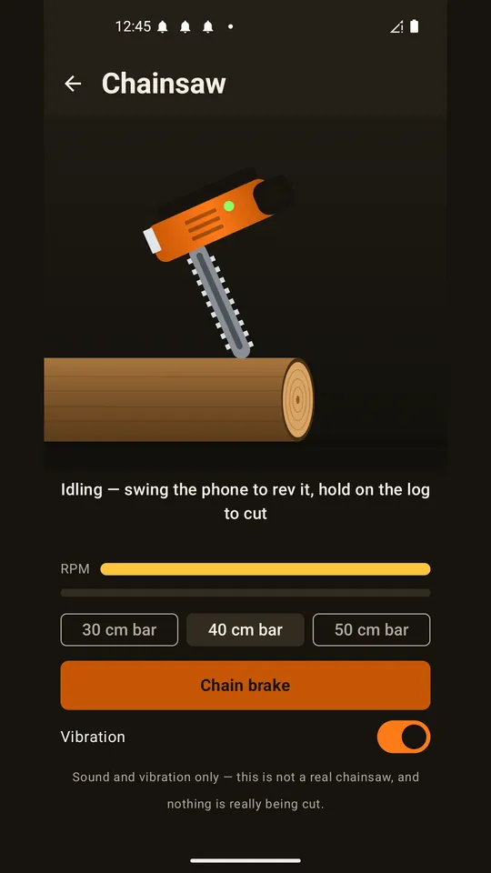
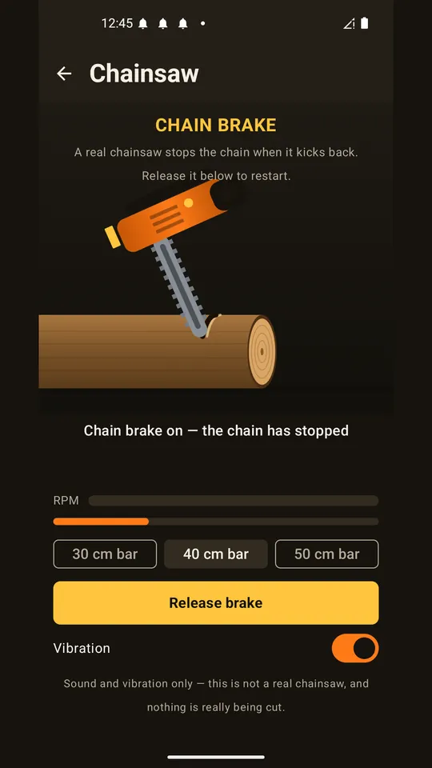
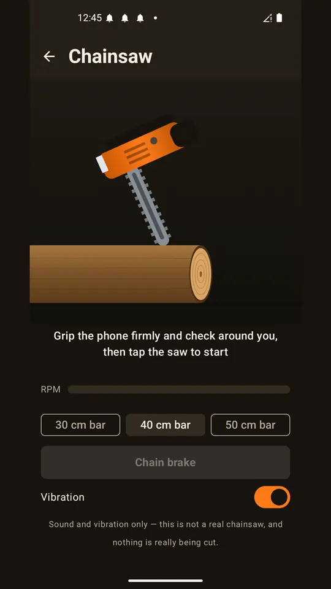
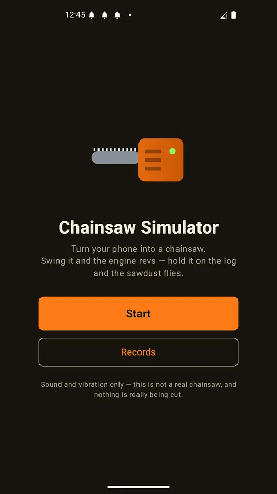

Chainsaw Simulator Prank
Turn your phone into a chainsaw. Swing it and the engine revs for real.






About this app
Pull the starter and a two-stroke engine kicks in. Then the vibration reaches your hand.
Swing it and the engine revs
This is not an app that just plays a sound file. Swing the phone for real and the gyroscope reads how fast you moved it, then pushes the engine up. The faster you swing, the higher the engine pitch and the louder the chain hiss. Hold still and it drops back to idle. The RPM gauge on screen shows exactly where you are.
Hold it on the log and sawdust flies
Press and hold the log at the bottom of the screen. A cut opens up, sawdust sprays, and the engine bogs down the way a real saw does when it bites into wood. Cut all the way through and the log cracks apart and lands in your records.
Three guide bars
30 cm, 40 cm, 50 cm. The short bar revs highest, sounds lighter and cuts fastest. The long bar runs low and torquey with a heavier sound, but it takes on thicker logs so it takes longer. You can hear the difference.
Chain brake
Jolt the phone hard while cutting and the chain brake snaps on. The chain stops dead and sparks fly. This is a real part on a real chainsaw, the one that stops the chain within a tenth of a second when the tip kicks back. Press release to restart.
Records
Logs cut, swings, peak swing speed and total run time all add up. You can share the record card as an image.
Every sound is made from scratch
No sample libraries. The engine firing, the chain noise, the brake screech and the wood cracking are all synthesised from waveforms. Headphones make it a lot more convincing.
Please note
This is an entertainment app that produces sound and vibration only. It is not a real chainsaw and nothing is actually being cut. The only target is logs and firewood. The sawdust volume on the records screen is a fun estimate that matches the animation, not a real measurement.
Ads appear only on the Start button on the home screen and in the bottom banner. There are no ads at all while you are using the saw. The internet permission is used only to show ads.
Android · free with ads · Developer: RealTunaLove · Store listing in 17 languages
Background story: why I built it